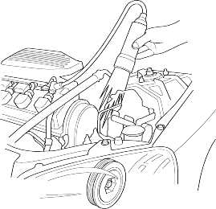
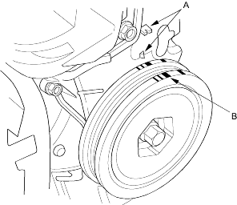

- Start the engine. Hold the engine at 3,000 rpm (min-1) with no load Shift lever in Park or Neutral, until the radiator fan comes on, then let it idle.
- Check the idle speed and adjust it if necessary:
- 5-door(KE model), refer to the '01 Civic Shop Manual on this CD (see page 11-425).
- 5-door(except KE model), refer to the '01 Civic Shop Manual on this CD (see page 11-560).
- Short the SCS terminal to ground:
- Using the SCS short connector (Except KY model), refer to the '01 Civic Shop Manual on this CD (see step 1on page 19-57).
- Using the DLC terminal box (KY model), refer to the '01 Civic Shop Manual on this CD (see step 1 on page 19-58).
- Using the Honda PGM Tester (KY model), refer to the '01 Civic Shop Manual on this CD (see step 1 on page 19-58).
- Connect the timing light to the No. 1 ignition coil wire.

- Point the light toward the pointers (A) on the timing belt cover. Check the ignition timing under a no load conditions: headlights, blower fan, rear window defogger and air conditioner are not operating. If the ignition timing differs from the specification below, replace the ECM/PCM (see page 11-3).
Ignition Timing:
M/T:8o + 2o BTDC (RED mark (B)) during idling in neutral
A/T:8o + 2o BTDC (RED mark (B)) during idling in  or
or 

- Disconnect the SCS short connector.